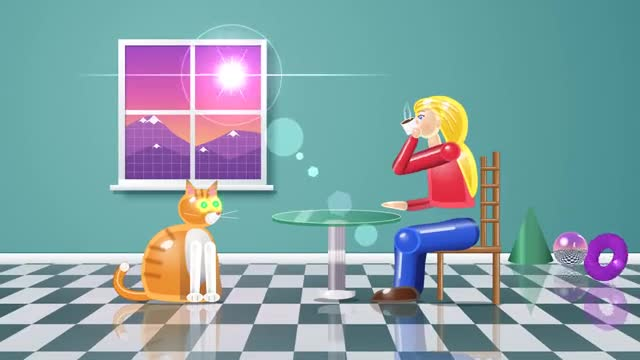

Library / Renders
9 keywords in this category, each one tested and explained in plain language.
Pick keywords as you browse, then press Copy for AI and paste into ChatGPT, Claude or any AI. Copy keywords gives a plain list for Midjourney or Seedance.
3D shapes painted with flat blocks of color and bold outlines, so they look like a cartoon or anime drawing.
Everything is shown in plain, smooth, matte clay, usually one soft gray or white.

The look of 1990s computer graphics: shiny plastic surfaces, chrome balls, checkerboard floors with perfect reflections and a slightly toy-like, too-clean finish.
A tidy 3D view from above at an angle, with no vanishing point, so it looks like a little game board or dollhouse.
A glossy, ultra-clean 3D look with crisp reflections and soft, believable light.
A spotless studio shot of an object made in 3D, floating or sitting on a simple backdrop with clean, flattering light.
A 3D look where light bounces like it does in real life, giving true reflections in puddles, glass and shiny floors.
The soft glow you see when light sinks into something and lights it from inside, like a backlit ear, a grape or a wax candle.
The 3D object is drawn as a see-through mesh of thin glowing lines, like the skeleton of a computer model.